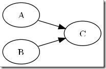
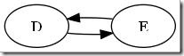
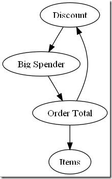
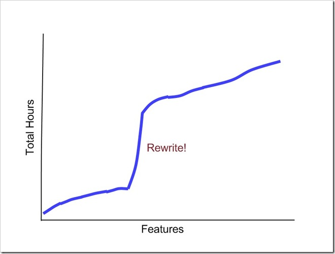
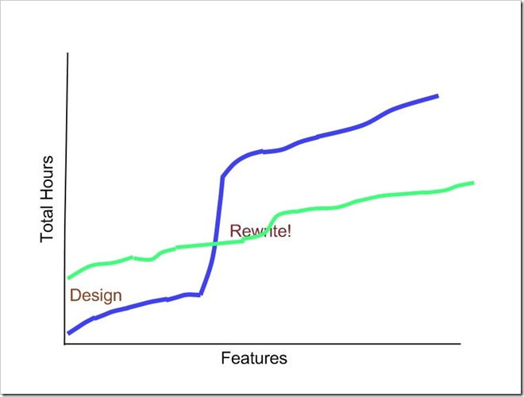

|
|
January 16th, 2010
 The “We Are Microsoft” charity coding weekend is an opportunity for developers to donate their time to local charities. It is organized primarily by Toi Wright. Matt Lagrotte of Verio has graciously provided web hosting for all of the charities. Without their support, and the support of Microsoft and other sponsors, 20 charities would go without the IT support that they need. The “We Are Microsoft” charity coding weekend is an opportunity for developers to donate their time to local charities. It is organized primarily by Toi Wright. Matt Lagrotte of Verio has graciously provided web hosting for all of the charities. Without their support, and the support of Microsoft and other sponsors, 20 charities would go without the IT support that they need.
Our charity is Second Wind Dallas. They find sponsors for local families in need. Schools identify those families, and a committee determines which sponsor will adopt which family. Several volunteers coordinate the communications among schools, families, and sponsors. Right now, the system is run completely by phone, email, and Excel. They need help.
We are building an online database to coordinate this information. Volunteer assignments, family referrals, and sponsor adoptions all change year after year. As a result, we are developing this as a historic model.
The primary function of the site is data entry. An administrator will set up the volunteer, school, family, and sponsor records. They will manage the assignments of volunteers to schools, the school referrals of families, and the adoption of families by sponsors.
The secondary function of the site is notification. A volunteer will be reminded to contact sponsors for donations. They will pick up those donations at the school and deliver them to the families. They will be reminded to send a thank you to each sponsor for those donations.
We are building this system using ASP .NET Web Forms, SQL Server 2005, and Entity Framework. We will have it done within the next 48 hours. And when we are done, Second Wind will have a much more manageable process.
Posted in Charity | No Comments »
December 29th, 2009
Download the source code and follow along.
This post is part of a series:
- The customer is not you.
- If-then is backwards.
- Condition and outcome templates.
- Condition composition.
- The rule model.
We’ve defined interfaces for the various types of rules in our point-of-sale system.
public interface IFreeItemsRule
{
IEnumerable<Item> GetFreeItems(Check check);
}
public interface IDiscountRule
{
IEnumerable<Discount> GetDiscounts(Check check);
}
public interface ICouponRule
{
IEnumerable<Coupon> GetCoupons(Check check);
}
These interfaces assume that we can execute rules based entirely on the check. While this is true for the majority of our example rules, this is not true for the frequent diner discount.
- m dollars for every n prior visits of minimum dollars or more that have not already been rewarded.
This rule needs access to the history of visits. So instead of providing a simple Check, we’ll provide a richer object. Inspired by the Model-View-ViewModel pattern, I’ve decided to call this rich object a Rule Model.
The RuleModel class
The Rule Model has access not only to the Check that the user is currently editing, but also to a repository. It can query the repository for any historical information that a rule may require.
public class RuleModel
{
private Check _check;
private IRepository _repository;
public RuleModel(Check check, IRepository repository)
{
_check = check;
_repository = repository;
}
public Check Check
{
get { return _check; }
}
}
For example, our frequent diner rule needs access to the history of visits.
public int GetPriorVisitCount(
FrequentDiner frequentDiner,
decimal minimumAmountPerVisit)
{
int totalPriorVisitCount = _repository
.GetChecks(check => check.FrequentDiner == frequentDiner &&
check.TotalBeforeDiscounts > minimumAmountPerVisit)
.Count();
int discountedPriorVisitCount = _repository
.GetChecks(check => check.FrequentDiner == frequentDiner)
.SelectMany(check => check.Discounts)
.OfType<PriorVisitDiscount>()
.Sum(discount => discount.VisitsCounted);
return totalPriorVisitCount - discountedPriorVisitCount;
}
The RuleModel can satisfy the demands of the frequent diner discount rule. It can count the number of prior visits by this frequent diner, and it can count the number of prior visits that have already been rewarded. The difference is needed to determine whether the frequent diner has earned a new discount.
Let history decide
When the frequent diner earns a discount, we record that reward on the new check. We use a derivative of the Discount class that captures the number of visits counted.
public class PriorVisitDiscount : Discount
{
private int _visitsCounted;
public PriorVisitDiscount(
string description,
decimal amount,
int visitsCounted)
: base(description, amount)
{
_visitsCounted = visitsCounted;
}
public int VisitsCounted
{
get { return _visitsCounted; }
}
}
By capturing this information in the discount itself, we ensure that our action is atomic. The very act of awarding the discount deducts the visits required to earn it. Refer back to the GetPriorVisitCount method to see how this historical information is used.
By capturing data historically rather than keeping a separate tally, we can greatly reduce the likelihood of a defect. And if there ever is a question about discounts awarded (or not awarded), the entire history is there to be audited.
Rules are independent
Download the source code and examine the tests. You’ll find that each of the example rules that we originally promised the customer are working as expected. You will also find that they are working independently of one another. As we discussed at the beginning of this series, independence is important for understanding the behavior of the rule engine. If the rules depend upon one another, it becomes difficult to explain why they behave the way that they do.
An example of independence can be found if we combine a free item rule with a coupon rule.
- Buy 5 burgers, get 2 ice creams free.
- Buy an ice cream and get a coupon for half off your next visit.
Take a look at the IndependentRulesTest to see how we express these rules:
[TestInitialize]
public void Initialize()
{
InitializeService(
new List<IDiscountRule>(),
new List<IFreeItemsRule>() {
new BuyOneGetOneRule(5, BurgerId, 2, IceCreamId) },
new List<ICouponRule>() {
new TriggerItemCouponRule(1, IceCreamId, "Half off") }
);
}
You might worry that the customer would be awarded free coupons for the two free ice creams. But fear not:
[TestMethod]
public void DontAwardACouponForFreeIceCream()
{
// Buy five burgers.
Check check = new Check();
check.AddItem(BurgerId).Quantity = 5;
Check outputCheck = _service.ExecuteRules(check);
// No coupons awarded.
Pred.Assert(outputCheck.Coupons, Is.Empty<Coupon>());
}
As you can see, no coupons are awarded when the customer buys 5 burgers. This is because the rules are independent of one another. Each rule is evaluated against the original check. Rules are never permitted to modify the check. No rule depends upon the results of another.
Conclusion
The next time your customer asks for customizable business logic, consider what we’ve gone over here. You could use a general purpose off the shelf rules engine, but that is probably asking too much of your customer. They would be forced to think like a programmer. Instead, you can provide specific goal-directed rules that they can parameterize. Use set unions to compose rules, and be sure that each rule runs independently of the others. The result will be a simple, powerful, and extensible custom rules engine that will empower, rather than confuse, your customer.
Posted in Rules engine | 2 Comments »
December 19th, 2009
Download the source code and follow along.
This post is part of a series:
- The customer is not you.
- If-then is backwards.
- Condition and outcome templates.
- Condition composition.
- The rule model.
So far, we have defined rules by using concrete examples. We turned them around to express them in terms of the goal. And we coded one interface per outcome, one class per condition.
With this code, we could easily write a system that applies one rule.
public class PointOfSaleService
{
private IDiscountRule _discountRule;
public PointOfSaleService(IDiscountRule discountRule)
{
_discountRule = discountRule;
}
public CheckWithDiscounts AddDiscounts(Check check)
{
return CheckWithDiscounts.Create(check, _discountRule.GetDiscounts(check));
}
}
Notice that the rule does not modify the original check. If it did, we could not safely execute the rule again. Instead, it returns a new object: a check with discounts. The check is independent. The check with discounts is dependent – upon the check and upon the rules.
Sorry, make that rule (singular). We inject the rule into the service. There is probably some code elsewhere that loads the rule from the database, so that the user can modify it.
But the user probably wants to write several different rules. They don’t want just one combo; they want a whole menu of them. Furthermore, they also want discounts for prior visits. We need to apply all of these discounts.
Union of collections
The IDiscountRule is coded to return a collection of Discount objects. We did this because one rule could apply multiple discounts. We can take advantage of that fact to compose these rules. All we need to do is take the union of their outcomes.
public class PointOfSaleService
{
private List<IDiscountRule> _discountRules;
public PointOfSaleService(List<IDiscountRule> discountRules)
{
_discountRules = discountRules;
}
public CheckWithDiscounts AddDiscounts(Check check)
{
return CheckWithDiscounts.Create(
check,
_discountRules.SelectMany(
rule => rule.GetDiscounts(check)));
}
}
The SelectMany extension method takes the union of several different sets. Each set is generated by one element of the source collection. You can think of it as flattening a tree. In this case, the parent of the tree is the rule, and the child is the list of discounts that the rule generates.
Isolation
We’ve taken care to remove cycles from our rules before we started. Remember the Big Spender rule? Give a 5% discount on checks totaling more than $500. To eliminate cycles, we need to consider the total of the original check, not the total after discounts have been applied.
Consider another way that we could have written the method:
public class PointOfSaleService
{
private List<IDiscountRule> _discountRules;
public PointOfSaleService(List<IDiscountRule> discountRules)
{
_discountRules = discountRules;
}
public void AddDiscounts(Check check)
{
// WARNING!!
// This is the wrong way to apply multiple rules.
foreach (IDiscountRule rule in _discountRules)
check.AddDiscounts(rule.GetDiscounts(check));
}
}
In this version, we are modifying the original check after each rule. The next rule sees the modifications. So what would happen if our Big Spender purchased a combo? If the combo brought the total of the check down below $500, he would no longer get his 5% discount. That is, unless we moved the Big Spender discount to the front of the list.
This is the mistake that so many rules engines have made. Each rule has the opportunity to change the state of the system. Each rule can see the effects of the rules that came before. Now, all of a sudden, order matters. The user has to prioritize rules. The rules engine has to run complex solutions like the Rete algorithm in order to iterate to a solution. We can no longer develop rules in isolation without running the risk of affecting the other rules.
Preserve original state
A point-of-sale system is interactive. The user can add items to a check and see what discounts are applied. They can then add or subtract other items and see how the discount is affected.
Imagine how we would accomplish that interactivity if we modified the check to apply discounts. Add a combo, and the rules engine adds a discount. Then remove one of the items. The rules engine would have to recognize what just happened and remove the discount in response. Can you imagine the code it would take to make this work? Can you imagine all of the corner cases? Can you imagine how much testing you would need to do to be sure it was right?
It is much easier to instead preserve the original state of the system. Our correct rules engine (second listing) does just that. Our incorrect rules engine (third listing) destroys the original check. It is nearly impossible to get back to the original.
In the correct rules engine, any changes that the user makes are applied to the original Check. The object that appears on the user’s screen, however, is the resulting CheckWithDiscounts. It is a very simple matter of re-running the rules after every change to update the discounts. If the user removes a trigger item, the rule will no longer fire, and the discount will be “removed”.
The only way to safely apply multiple rules is to allow each rule to see only the original data. Rules should not modify data. Instead, the engine should gather their outcomes and build a new state from that union. Even then, that new state does not replace the original state. When the original state changes, you can simply re-run the rules to evaluate their new effect.
To finish it all off, we provide all of the context that the rules need in the Rule Model.
Posted in Rules engine | No Comments »
December 10th, 2009
Download the source code and follow along.
This post is part of a series:
- The customer is not you.
- If-then is backwards.
- Condition and outcome templates.
- Condition composition.
- The rule model.
We have rewritten our rules in terms of goals rather than conditions:
- Free items = 1 sandwich for every 4 on the original check.
- Discount =
- 75 cents for every combination of sandwich, chips, and drink on the original check, plus
- 5 dollars for every 10 prior visits of 5 dollars or more that have not already been rewarded.
- Coupons = 1 half-off coupon for every ice cream.
Now we need to give the customer a way to express rules in those terms. One way to do this is to identify all of the properties mentioned in the rules and provide them to the user:
- Check
- Item
- Quantity
- Total
- Visit
- Coupon
- etc.
This approach works for programmers, but it does not work for business users. The customer is not you. programmer can build a rule out of tiny parts. But the business user does not think this way. If you force them to think this way, they will get it wrong.
For example, while working on an eCommerce system, I asked a business user what properties they want in their rules engine. I explained that we could use an operator to compare a property against a number. One of the properties they asked for was “Any Item”. “How would you use that?”, I asked. “Like this: if Any Item > $50.00, then print a coupon.” This makes perfect sense to a business user. But this property is nonsense to a programmer.
Templates
Rather than attacking the problem from a programmer’s perspective, attack it from the business user’s perspective. Business users can’t build a rule out of small pieces. So we have to build rules for them. We can do so by creating templates.
This is why we want specific examples of rules. For each example of a rule, start by turning every constant into a parameter:
- Free items = m promotionalItemId for every n triggerItemId on the original check.
- Discount =
- m dollars for every combination of {itemIds} on the original check, plus
- m dollars for every n prior visits of minimum dollars or more that have not already been rewarded.
- Coupons = 1 couponType coupon for every n triggerItemId.
There may be some trivial parameters that you need to add. The example rule only dealt with one trigger item for a coupon, but you can imagine that they might want to specify the number. A coefficient of 1 tends to get forgotten.
We now have a set of outcome templates and condition templates. The outcomes are goal-oriented, and the conditions satisfy the outcomes. Conditions in this context are not just true or false; they govern the behavior of the outcome. That is why conditions must be expressed within the scope of an outcome, not the other way around.
Interface per outcome template
We can finally start putting rules into code. The first thing we will want to do is express each of our outcome templates as an interface. In a condition-oriented rules engine, an outcome would be an action: add a free item, print a coupon, etc. But in a goal-oriented rules engine, an outcome is a query. Given a check, what are my free items. What are my coupons. These are the interfaces that represent our three outcome templates:
public interface IFreeItemsRule
{
IEnumerable<Item> GetFreeItems(Check check);
}
public interface IDiscountRule
{
IEnumerable<Discount> GetDiscounts(Check check);
}
public interface ICouponRule
{
IEnumerable<Coupon> GetCoupons(Check check);
}
Each interface is implemented by a rule. We don’t know at this point what kinds of rules might implement these interfaces, but we do know precisely what the outcome of those rules can be. A rule can yield free items, or it can yield coupons. But it can’t do both. The rules are goal-oriented.
Class per condition template
Once we have outcome templates expressed as interfaces, we can write our condition templates as classes that implement those interfaces. Remember that these conditions are not simply true or false. They influence the outcome.
public class CombinationDiscountRule : IDiscountRule
{
private string _description;
private decimal _amount;
private List<ItemId> _triggerItems;
public CombinationDiscountRule(string description, decimal amount, List<ItemId> triggerItems)
{
_description = description;
_amount = amount;
_triggerItems = triggerItems;
}
public IEnumerable<Discount> GetDiscounts(Check check)
{
// Get the minimum quantity of all trigger items.
int comboCount = _triggerItems
.Select(triggerItemId => check
.Items
.Where(item => item.ItemId == triggerItemId)
.Sum(item => item.Quantity))
.Min();
for (int i = 0; i < comboCount; i++)
yield return new Discount(_description, _amount);
}
}
To define a rule, all the business user has to do is fill in the parameters.
To our programmer sensibilities, it seems that we are putting too much behavior into one class. Not only is it looking for combinations, but it is also creating discounts. But to a business user, it’s one rule. They don’t build things from pieces. They need a template.
Still, there is some refactoring that we can do. We’ll tackle that next in Condition composition.
Posted in Rules engine | No Comments »
December 4th, 2009
Download the source code and follow along.
This post is part of a series:
- The customer is not you.
- If-then is backwards.
- Condition and outcome templates.
- Condition composition.
- The rule model.
It seems that every new rules technology is just another way to write an "if" statement. We are used to expressing conditional logic in procedural code with flow control. Most of the rules engines that you could buy apply that same paradigm to rules. This is a mistake. It is better to turn that around.
Take, for example, the Windows Workflow Foundation Rules Engine. Every rule in the rule set is made up of three components:
- Condition
- Then actions
- Else actions
The condition can read any property of the workflow. It determines which of the two actions to execute. Both of the actions can modify any property of the workflow. Reading and writing from the same set of properties causes problems.
Conflicts
 One problem occurs when two rules have actions that write to the same property. For example:
- If A = 1 then C = 3
- If B = 2 then C = 4
Given this rule set, when A=1 and B=2, what is the correct value of C?
Workflow and other rule engines solve this problem by prioritizing rules. Rules with higher priority take precedence over rules with lower priority. The unfortunate consequence of this is that you have to understand the priorities of existing rules in order to correctly prioritize a new rule. You cannot insert the new rule with confidence that it won't break anything.
 Cycles
Another problem occurs when a cycle arises among conditions and actions:
- If D > 4 then E = 7
- If E > 5 then D = 3
If the second rule fires, should we re-run the first? How do we know when to stop?
Many rules engines use a sophisticated pattern-matching strategy called the Rete Algorithm to solve this problem. This algorithm runs subsets of the rules on each iteration based on the effects of the prior iteration. It walks the deltas toward a satisfactory solution.
Unfortunately, this algorithm is complex and can produce unexpected results. A business user defining a rule set cannot easily reason through cycles to determine exactly what the system will do. It is easier to reason about an acyclic system.
Goal directed rules
What works better is to express the rules in terms of the goal, not in terms of the condition. Rather than saying "If the amount is less than $500, the loan is approved", turn it around. "The loan is approved when the amount is less than $500." While this seems like a semantic distinction, it solves the problems of conflicts and cycles quite neatly.
When I say "The loan is approved when the amount is less than $500", I am also saying that there are no other conditions. To add another condition, I would have to modify the statement. For example: "The loan is approved when the amount is less than $500 or the amount is between $500 and $1000 and the credit score is over 700."
Think about the way that Excel spreadsheets work. I don't write a rule that says "Add one to B2 and store the result in C3". I put a formula in C3 that says "=B2+1". I cannot simply add another rule to the system that also affects C3. I would have to modify the formula in C3. The result is unambiguous.
Think also about the way that Linq works. I don't write a loop that modifies my target collection. I write an expression that calculates it. The behavior of the loop is harder to predict; the behavior of the expression is explicit.
A goal directed rule states the value of one property based on the values of other properties. The rule is explicit. Properties are not allowed to change, and rules are complete, so one rule cannot conflict with another.
 Find and eliminate cycles
When rules are goal directed, cycles are easy to find. The algorithm is simple. Start with one property that you intend to solve for. Mark it as being evaluated, and then evaluate it. If that rule refers to another property, check to see if it's marked. If it is not, mark it and evaluate it. If it is, you have found a cycle.
Suppose we wanted to add this rule to our point-of-sale system:
- People who spend more than $500 get a 5% big spender discount.
More formally:
- Discount = if Big Spender, 5%, otherwise 0.
- Big Spender = Order Total > $500.
- Order Total = sum of Items minus Discount.
We mark Discount and evaluate it. We see that it requires Big Spender, so we mark and evaluate Big Spender. This leads us to Order Total, and then back to Discount. Since Discount is marked, our rules form a cycle.
To break this cycle, we make our rule more explicit:
- People who spend more than $500 before discounts are applied get a 5% big spender discount.
Now our formal definition looks like this:
- Discount = if Big Spender, 5%, otherwise 0.
- Big Spender = Order Total > $500.
- Order Total = sum of Items
minus Discount.
The cycle has been eliminated, and it is easier to reason about the system. No complex algorithm is required.
Point-of-sale as goal directed rules
Let's rewrite the example rules of the point-of-sale system. We turn the if-then around to make it goal directed. We combine rules that influence the same goal. And we eliminate cycles by being explicit. Here's the result:
- Free items = 1 sandwich for every 4 on the original check.
- Discount =
- 75 cents for every combination of sandwich, chips, and drink on the original check, plus
- 5 dollars for every 10 prior visits of 5 dollars or more that have not already been rewarded.
- Coupons = 1 half-off coupon for every ice cream.
These are some rules that we can easily reason about. Coming up in the series, we'll start to put these rules into code with Condition and outcome templates.
Posted in Rules engine | No Comments »
December 1st, 2009
Download the source code and follow along.
This post is part of a series:
- The customer is not you.
- If-then is backwards.
- Condition and outcome templates.
- Condition composition.
- The rule model.
Some problems call for customizable rules. Scientific and statistical analysis of data must be modified as new facts are learned and new questions are asked. Loan approvals are adjusted according to the latest actuarial tables. Sales and marketing systems are tweaked to incorporate new promotions. If a programmer has to change the code to customize these rules, the system has failed.
One solution to this problem is to build in support for a business rules engine. In .NET, you might use Windows Workflow Foundation or BizTalk BRE. In Java, you might try Drools. These tools allow customization of business logic at run time. They are general-purpose, out-of-the-box, inexpensive solutions.
Another solution is to build in a scripting language. In .NET you have Boo and IronPython. In Java, you have Groovy and Jython. A scripting language offers much more power than a typical business rules engine, but is targeted toward people who write code. While they do allow code to be changed after deployment, scripting languages force the programmer to stay in the loop.
Know thy customer, for he is not thee
The problem with both of these solutions is that the person creating the rules has to learn a new skill. When a scripting language is used, the problem is obvious. The rules are written in code. But what's wrong with a graphical workflow? There's no code involved. The user just drags-and-drops parts to build a schematic. Not only does this sound easy, it sounds like fun!
The truth is that it does not matter whether the system is expressed in code or in diagrams. The kind of thinking required in either case is the same. Programmers are used to building things up. Other people are used to breaking things down. A person using a business system can describe their problem and how they want to solve it. But they are not skilled in putting pieces together to build that solution. Whether they are staring at a blinking cursor or a blank canvas, the business user has the same reaction: "Now what?"
Domain specific rules
To design a rules engine that really meets your customer's needs, it needs to speak your customer's language. Don't make them learn a new skill; bring the solution to them. The rules engine should be domain specific.
The best way to capture the language of the domain is to ask for specific examples of business rules. Reassure your customer that the rules engine will be flexible enough to handle several kinds of rules, but write down as many specific rules as possible.
Take, for example, a point-of-sale system. Here are some specific rules that a business user would want to create:
- When the customer buys four sandwiches, they get a fifth one free.
- When the customer buys a sandwich, chips, and a drink, they get a 75 cent discount.
- When the customer buys an ice cream, print a coupon for half off on their next visit.
- After 10 visits of 5 dollars or more, the custom gets 5 dollars off the 11th visit.
When asked for this information, the business user might try to use generic terms like BOGO (buy-one-get-one), discount, and loyalty. You must press the issue. You will need specific catalog items, specific dollar amounts, and specific thresholds. What is a sandwich? You must print out the catalog and have them highlight all of the sandwich items. Without specifics, you are assuming that the business user is making the correct generalizations. Remember, you are good at figuring out what pieces to put together; your customer is not.
In the remainder of this series, we will build a point-of-sale rules engine that can run these rules and others like them. The goal is to provide the business user with all of the power they need, and no more.
Next, If-then is backwards.
Posted in Rules engine | No Comments »
November 23rd, 2009
I was saddened when I was unable to attend PDC this year. One project is winding down, we're staffing up for the next, and I cannot be spared at this particular time. I was not present when Scott Hanselman dragged and dropped his way through a data binding demo. Nevertheless, I was groaning from afar.
I did, however, have the chance to participate in the Not@PDC conference. It was quickly organized via Twitter and blogs to be an online get together for folks who were not lucky enough to be in LA. (Lucky to be in LA? Did I really say that?) It turned out to be a wonderful substitute. OK, not really a substitute; more like consolation.
I presented Data Binding Without INotifyPropertyChanged, a 70-minute demo of Update Controls in WPF, Winforms, and Silverlight. In the video, I show you the most awesome application ever: Microsoft Excel. Excel is awesome because you can use the MVVM pattern. It's true.
As you watch, please forgive the poor video quality and even poorer jokes. I'll be polishing the demo and taking it on the road. My first stop will hopefully be the North Dallas .NET Users' Group. I'll keep you posted.
Posted in Update Controls | No Comments »
November 8th, 2009
The question is how bad the recursive Fibonacci algorithm.
To calculate fib n, how many times does this method evaluate fib m, where m < n and both m and n >= 0.
The answer, as you might expect, is pretty bad.
Let’s look at the code again:
let rec fib n =
if n < 2 then 1
else fib (n-1) + fib (n-2)
When would fib n be called recursively? When fib (n+1) or fib (n+2) is called.
How many times would fib n be called? Count of fib n is count of fib (n+1) plus count of fib (n+2). Look familiar?
The count is the Fibonacci sequence in reverse.
Posted in Problems | No Comments »
November 4th, 2009
The Fibonacci function is often the first code that someone writes to learn a new functional language. Ironically, it's not always the best example of functional programming. Here's the Fibonacci function in F#:
let rec fib n =
if n < 2 then 1
else fib (n-1) + fib (n-2)
The code matches the mathematical definition, which is a strength of functional programming. However, it performs poorly unless the language has a feature called "memoization". F# does not have this feature.
Can you spot the difference between these two statements?
- Each Fibonacci number is the sum of the prior two Fibonacci numbers.
- To calculate Fibonacci of n, add Fibonacci of n-1 to Fibonacci of n-2.
They might seem to say the same thing, but in fact they are different. The first is a definition. The second is an algorithm.
Memoization is a memory/time tradeoff wherein the results of a function are stored in the expectation that the same function will be called with the same parameters. It helps us get across the gap between definition and algorithm.
Your homework
Nevertheless, F# does not have built-in memoization. So when you execute this Fibonacci function, it will execute recursively and redundantly. It will call fib for smaller numbers multiple times. Your homework is to find out how many times.
To calculate fib n, how many times does this method evaluate fib m, where m < n and both m and n >= 0.
Email or post your answers. Code is good, but proof is better.
Posted in Problems | No Comments »
October 29th, 2009
The change in the solution should be proportional to the change in the problem.
Demoware
Have you ever attended one of these demos? "No code required!" "Drag and drop!" "It's automagic!"
The presenter points and clicks his way through a canned problem and creates a solution extremely rapidly. He data binds to an Access database. He lays out a report. He generates a web site directly from tables. Then he walks off stage.
If you've tried to use VB 6 data binding or Dynamic Data in a production system, you know the problem with demoware. It only works for a simple problem. Once the problem becomes complex, the demoware does not work. Your only recourse is to rewrite.
If you were to plot the total amount of work against features, you might see something like this:

The slope of the line before the rewrite, when you were relying upon automagic demoware, is fairly constant. Each new feature you added required you to drag a new column onto the designer. Not only is it easy to perform each change, each change is roughly the same size.
The slope of the line after the rewrite is also fairly constant. Here you are no longer using the automagic demoware framework. You have switched to a production-ready framework. Even though have to actually write code for each feature, the amount of code per feature is about the same. Moreover, since you've learned the new framework and the pattern that it demands, it's really not that hard to write that code. The slope is steeper than it was with the automagic demoware, but at least it's constant.
Up front design
Let's imagine that we skipped that demo and instead designed the infrastructure that our problem demands. Our total effort vs. features might look like this:

We spend significantly more hours before we can deliver the first feature. But once we do, the effort per new feature is constant. We avoid the big rewrite cliff because we create a framework that can handle all of features that we'll need to write. We don't know ahead of time what all those features will be, but we do know that our chosen framework will handle whatever we throw at it.
I evaluate everything from the principle of Proportional Change. When the problem changes a little, I should only need a small change in the solution. Big changes in the solution should only occur when there are big changes in the problem. I've found that many things violate this principle, not just demoware. Here's a few more examples:
- YAGNI - Yes, you really are gonna need it.
- Refactoring to a design - Small steps cannot always get you to your goal.
- Code generation
- Event-driven code
Posted in Processes | No Comments »
|

 The “We Are Microsoft” charity coding weekend is an opportunity for developers to donate their time to local charities. It is organized primarily by Toi Wright. Matt Lagrotte of Verio has graciously provided web hosting for all of the charities. Without their support, and the support of Microsoft and other sponsors, 20 charities would go without the IT support that they need.
The “We Are Microsoft” charity coding weekend is an opportunity for developers to donate their time to local charities. It is organized primarily by Toi Wright. Matt Lagrotte of Verio has graciously provided web hosting for all of the charities. Without their support, and the support of Microsoft and other sponsors, 20 charities would go without the IT support that they need.{kind=link}
{kind=link}
{kind=link}
{kind=link}
{kind=link}